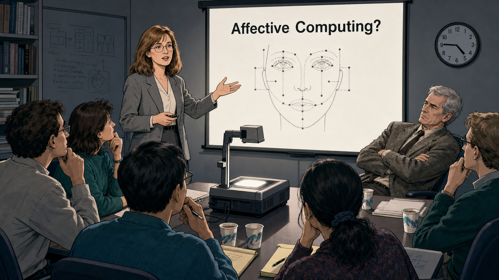

The Signal Beneath the Noise
Cover Image Prompt
(This is the Cover Image. Do not include this label in the image.) Please generate a wide-landscape 16:9 cover image that blends two illustration styles across a single scene: the left half rendered in clean 1990s Bell-Labs-style modernist tech-lab illustration, and the right half in a contemporary photorealistic-with-period-elements style. Center a composed portrait of Rosalind Picard, a focused white woman in her thirties with shoulder-length light brown hair, round wire-frame glasses, and a navy blazer over a cream blouse. On the left, she stands before a boxy CRT monitor displaying grayscale texture-analysis grids and a wall of technical journals. On the right, the same woman, now with a few strands of gray in her hair, stands beside a modern lab bench holding a slim wearable wristband sensor, its small screen showing a wavy skin-conductance line. Between the two halves, a translucent human face outline bridges the eras, one side showing a bare neutral expression, the other overlaid with a soft valence-arousal grid. Render the title "THE SIGNAL BENEATH THE NOISE" in clean geometric lettering across the top, with the subtitle "Rosalind Picard and the Birth of Affective Computing" beneath it. Color palette: cool CRT teal, warm amber, navy, soft gray, and a single thread of coral connecting both halves. Emotional tone: quiet scientific conviction bridging two eras. Generate the image immediately without asking clarifying questions.Narrative Prompt
This is a historically grounded educational case study for students in grades 9-12. It follows Rosalind W. Picard (born 1962), an American electrical engineer, from her early-1990s work in mainstream computer vision at the MIT Media Lab through her 1995 technical report and 1997 MIT Press book "Affective Computing," which named and launched that field. The story covers her founding of the Affective Computing Research Group, the early wearable physiological sensors her lab built, and the later real-world application of that research through companies including Empatica. Themes: intellectual courage in the face of professional skepticism, the idea that emotion is data rather than noise, and the ethical boundary between sensing an outward affective signal and claiming to know someone's true inner feeling. The skeptical colleague's line "Emotion is just noise — why are you wasting time working on it?" is a paraphrase of an anecdote Picard has recounted from an early research meeting; the exact wording is dramatized, but the substance of the skepticism she faced is well documented. All panels depict Picard with consistent physical features — light brown hair, round glasses, warm but serious expression — aging naturally across the decades shown. Art style shifts deliberately partway through the story: Panels 1-5 use a clean, late-1980s/1990s Bell-Labs-style modernist tech-lab illustration style; Panels 6-8 shift to a contemporary photorealistic-with-period-elements style reflecting modern wearable devices and labs.Prologue – The Researcher Who Asked a Different Question
In 1991, Rosalind Picard joined the MIT Media Lab as a rising star in computer vision, the kind of researcher other engineers wanted on their team. She built systems that could describe an image's texture in numbers and search a database by visual similarity, solid, respected work inside the mainstream of artificial intelligence. Then she asked a question almost nobody in her field wanted to hear: what if computers that ignore human emotion are missing something essential, not something irrelevant? That question would cost her some credibility at first and, within a decade, create an entire field of research.
Panel 1: The Young Engineer at the Media Lab
Image Prompt
(This is Panel 01. Do not include the panel number in the image.) I am about to ask you to generate a series of images for a graphic novel. Please make the images have a consistent style and consistent characters. Do not ask any clarifying questions. Just generate the image immediately when asked. Please generate a 16:9 image in a clean 1990s Bell-Labs-style modernist tech-lab illustration style depicting panel 1 of 8. Show Rosalind Picard, a focused white woman of 29 with shoulder-length light brown hair, round wire-frame glasses, and a gray blazer, standing in her MIT Media Lab office in Cambridge, Massachusetts, in 1991. She examines a boxy beige CRT monitor displaying a grid of grayscale texture patterns — woven fabric, tree bark, brick. Include a bookshelf of electrical-engineering journals, a chalkboard covered in matrix notation, a rotary desk phone, a framed MIT diploma, a half-finished cup of coffee, and thick woven cables running behind the monitor. Color palette: cool gray, CRT teal-green, warm amber desk light, and navy. Emotional tone: quiet competence and early-career momentum. Generate the image immediately without asking clarifying questions.Rosalind Picard arrived at the MIT Media Lab in 1991 already an accomplished engineer, with a degree from Georgia Tech and years designing chips at Bell Labs behind her. She specialized in signal and image processing, teaching computers to describe the texture of a photograph in precise mathematical terms. It was rigorous, respected work, the kind that built careers inside mainstream artificial intelligence. Nobody around her expected the question she would soon start asking out loud.
Panel 2: Photobook and the Language of Texture
Image Prompt
(This is Panel 02. Do not include the panel number in the image.) Please generate a 16:9 image in the same clean 1990s Bell-Labs-style modernist tech-lab illustration style depicting panel 2 of 8. Make the characters and style consistent with the prior panel. Show Picard, now 31, demonstrating her Photobook content-based image-retrieval system to two colleagues in a Media Lab demo room in 1993. A large monitor displays a grid of photographs — faces, fabric swatches, and textured surfaces — ranked by visual similarity to a query image highlighted in a corner. Include a mouse and trackball, a printed research paper titled "Content-Based Image Retrieval," a slide projector, a whiteboard with similarity-metric equations, a window showing the Charles River, and two impressed colleagues in shirtsleeves taking notes. Color palette: cool teal monitor glow, warm oak furniture, gray carpet, and soft amber lighting. Emotional tone: professional pride and quiet mastery. Generate the image immediately without asking clarifying questions.Her Photobook system let a computer search thousands of images by texture, shape, and visual similarity rather than by typed keywords, years ahead of its time. Colleagues respected the work precisely because it stayed inside familiar territory: cameras, pixels, and measurable patterns. Picard had built a reputation as a serious signal-processing researcher. That reputation was about to become the thing she risked.
Panel 3: A Question Bell Labs Never Asked
Image Prompt
(This is Panel 03. Do not include the panel number in the image.) Please generate a 16:9 image in the same clean 1990s Bell-Labs-style modernist tech-lab illustration style depicting panel 3 of 8. Make the characters and style consistent with the prior panels. Show Picard alone in her Media Lab office late at night in 1994, sitting back from her desk with an open neuroscience journal in her lap. The desk lamp illuminates pages describing patients whose brain injuries destroyed their ability to feel emotion alongside their ability to make good decisions. Include a half-graded stack of student papers, a second open book on facial expression research, a cooling mug of tea, a dark window reflecting her thoughtful expression, a wall calendar marked 1994, and a notepad where she has written "emotion = data?" and circled it. Color palette: warm lamp amber against cool midnight blue, muted teal accents. Emotional tone: a quiet, dawning realization. Generate the image immediately without asking clarifying questions.Late one night, reading neuroscience research on patients whose brain injuries had blunted their emotions along with their judgment, Picard saw something her field had missed. These patients could still reason step by step, yet without emotional signals they made terrible real-world decisions, over and over. If emotion helped human judgment work well, maybe computers built to reason like people needed a way to notice it too.
Panel 4: "Emotion Is Just Noise"

Image Prompt
(This is Panel 04. Do not include the panel number in the image.) Please generate a 16:9 image in the same clean 1990s Bell-Labs-style modernist tech-lab illustration style depicting panel 4 of 8. Make the characters and style consistent with the prior panels. Show a Media Lab conference room in 1995 during a research review. Picard stands at a projector screen showing a simple diagram of a face with labeled emotional signals, mid-sentence, while a skeptical senior researcher, a gray-haired white man in a tweed jacket, leans back with crossed arms and a doubtful expression. Include five other researchers around a long table with mixed reactions — one nodding, two exchanging skeptical glances, one taking careful notes — a slide reading "Affective Computing?" with a question mark, an overhead projector, foam coffee cups, and a wall clock reading 4:45. Color palette: cool gray, projector-screen white, muted teal, and a single warm highlight on Picard. Emotional tone: professional tension and quiet resolve. Generate the image immediately without asking clarifying questions.The reaction from colleagues was not warm. One senior researcher told her flatly that emotion was just noise, and asked why she was wasting her time on it — a line she has recounted from those early meetings. In a field that prized cold logic, raising emotion sounded to some like abandoning rigor altogether. Picard kept building her argument anyway, backing every claim with data instead of intuition.
Panel 5: Naming a New Field
Image Prompt
(This is Panel 05. Do not include the panel number in the image.) Please generate a 16:9 image in the same clean 1990s Bell-Labs-style modernist tech-lab illustration style depicting panel 5 of 8. Make the characters and style consistent with the prior panels. Show Picard at her desk in 1995, typing at a beige desktop computer, with a printed title page reading "Affective Computing — MIT Media Lab Technical Report #321" resting beside the keyboard. Include a stack of draft pages covered in red-pen edits, a diagram of a face linked to sensor icons for skin conductance and heart rate, a coffee thermos, a small potted plant, morning light through a tall window, and a corkboard pinned with sketches of a computer that notices a frown. Color palette: warm dawn amber, cool teal monitor light, cream paper, and navy. Emotional tone: determined focus and creative breakthrough. Generate the image immediately without asking clarifying questions.In 1995, Picard published a technical report titled simply "Affective Computing," laying out her case in careful, measured language: computers that ignore emotion are working with an incomplete model of the people they serve. Two years later, MIT Press expanded it into a full book under the same title. The name stuck, and with it, an entire field of research now had a founding text and a founder.
Panel 6: Wires, Skin, and a New Kind of Sensor
Image Prompt
(This is Panel 06. Do not include the panel number in the image.) Please generate a 16:9 image in a contemporary photorealistic-with-period- elements illustration style depicting panel 6 of 8. Make Picard recognizable from prior panels, now in her late thirties with a few gray strands in her light brown hair, wearing a lab coat over a sweater. Show her leading a small research group in a Media Lab workshop around 1999, gathered around a worktable where a graduate student wears a prototype glove threaded with thin wires connected to a skin-conductance sensor. A nearby monitor plots a live wavy line of physiological data. Include a soldering iron, spools of colored wire, a bin of small electrode pads, a whiteboard labeled "Affective Computing Research Group," a shelf of early wearable prototypes, and diverse students from different backgrounds collaborating around the table. Color palette: workshop teal, warm copper wire, cool steel, and soft lab-white light. Emotional tone: hands-on curiosity and collaborative energy. Generate the image immediately without asking clarifying questions.Picard founded the Affective Computing Research Group and started building hardware to match her theory. Her students wired gloves and wristbands with sensors that measured skin conductance, heart rate, and movement, turning invisible physiological changes into readable data. A computer still could not feel anything, but it could finally begin to notice what a person's body was quietly signaling.
Panel 7: The Wristband That Listened
Image Prompt
(This is Panel 07. Do not include the panel number in the image.) Please generate a 16:9 image in the same contemporary photorealistic-with- period-elements illustration style depicting panel 7 of 8. Make Picard recognizable from prior panels, now in her fifties, observing from a lab bench in the mid-2010s. In the foreground, a young person wears a sleek modern wristband sensor on their wrist while a tablet nearby displays a simple two-axis chart with "calm to energetic" on one axis and "unpleasant to pleasant" on the other, with a small dot marking a data point. Include a second screen showing a friendly round-eyed robot face whose expression softens in response to the data, a bowl of charging cables, a research poster about physiological stress patterns, warm daylight from a window, and a notebook labeled "signals, not certainty" on the desk. Color palette: soft teal, warm skin tones, cool device silver, and gentle daylight gold. Emotional tone: careful optimism and real-world usefulness. Generate the image immediately without asking clarifying questions.Decades after that first skeptical meeting, wearable sensors born from Picard's lab were helping people notice their own stress and even alert some to an oncoming seizure before it struck. The same physiological signals — skin conductance, heart rate, movement — that once lived only in research papers now traveled on ordinary wrists. Her ideas also reshaped how designers built expressive machines, from tutoring software to social robots that soften their tone when a user's face or voice signals frustration.
Panel 8: A Signal Is Not a Mind
Image Prompt
(This is Panel 08. Do not include the panel number in the image.) Please generate a 16:9 image in the same contemporary photorealistic-with- period-elements illustration style depicting panel 8 of 8. Make Picard recognizable from prior panels, now with fully gray-streaked hair, standing before a small group of diverse high-school-aged student designers in a bright present-day classroom. A large screen behind her shows a simple robot face alongside two labeled boxes: "What we can measure: a furrowed brow, a rising pulse" and "What we cannot know for certain: what a person truly feels inside," connected by a cautious dashed arrow rather than an equals sign. Include laptops with expressive robot-face code on screen, a poster of a valence-arousal grid, a sticky note reading "sense responsibly," warm classroom light, and students nodding thoughtfully. Color palette: optimistic teal, warm classroom wood tones, soft white, and a single cautionary amber highlight on the dashed arrow. Emotional tone: thoughtful responsibility paired with hope. Generate the image immediately without asking clarifying questions.Picard has always been careful to draw a line her field sometimes blurs: a system can sense an outward affective signal, but it cannot read a private inner feeling with certainty. A furrowed brow might mean frustration, deep thought, or just bright sunlight in someone's eyes. The responsible lesson she leaves every new designer is simple — build machines that respond to what they can actually observe, and stay honest about everything they cannot.
Epilogue – What Made Picard's Argument Endure?
Rosalind Picard risked a hard-won reputation in mainstream computer vision to argue that emotion belonged inside serious engineering, not outside it. She backed that argument with data, technical reports, a defining book, and working hardware, not just conviction. Three decades later, affective computing shapes tutoring software, healthcare wearables, and the expressive robot faces students design in classrooms today. Her insistence on a careful, honest boundary between sensing a signal and claiming to know a feeling remains the field's most important safeguard.
| Challenge | How Picard Responded | Lesson for Today |
|---|---|---|
| A respected field treated emotion as irrelevant noise | Read across neuroscience, psychology, and engineering to build a rigorous counter-argument | Real insight often comes from connecting fields that rarely talk to each other |
| Senior colleagues doubted her pivot away from mainstream computer vision | Published a 1995 technical report and a 1997 book backed with data, not just opinion | Evidence, patiently assembled, outlasts an offhand dismissal |
| No shared vocabulary existed for computers and emotion | Coined and defined "affective computing," then founded a research group to build it | Naming a problem precisely is often the first step toward solving it |
| Emotion-sensing technology risks overclaiming what it truly knows | Consistently distinguished a measurable outward signal from a person's private inner feeling | Design the boundary between what a system senses and what it merely infers |
Call to Action
Every robot face this book teaches you to build will eventually sense something about the person looking at it — a smile, a furrowed brow, a long pause before an answer. Design that response with Picard's honesty: notice the signal, respond helpfully, and never pretend your robot knows more about someone's heart than it actually does.
"If we want computers to be genuinely intelligent and to interact naturally with us, we must give computers the ability to recognize, understand, even to have and express emotions." —Rosalind Picard, Affective Computing (MIT Press, 1997)
"We're not known as empathically savvy people. Yet empathy — reading and adapting behavior to affective cues — is critical." —Rosalind Picard, MIT News, December 1997
"It's easy to make robots look like they are feeling all kinds of things." —Rosalind Picard, MIT News
References
- Wikipedia: Rosalind Picard - Biography of the American electrical engineer who founded affective computing
- Wikipedia: Affective computing - History and scope of the field Picard named and launched
- Wikipedia: Facial Action Coding System - The facial-measurement framework underlying much of affective computing's emotion-recognition research
- MIT Media Lab: Rosalind W. Picard - Official faculty profile and research overview for the Affective Computing Research Group's founder
- MIT Press: Affective Computing - Publisher's page for the 1997 book that named and defined the field